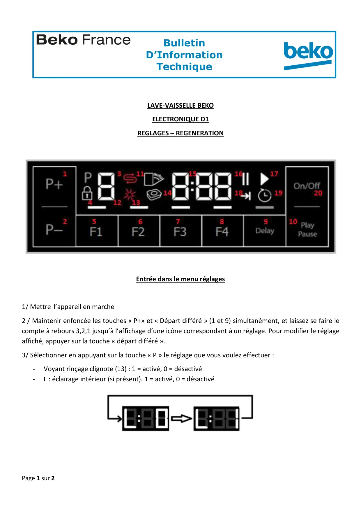
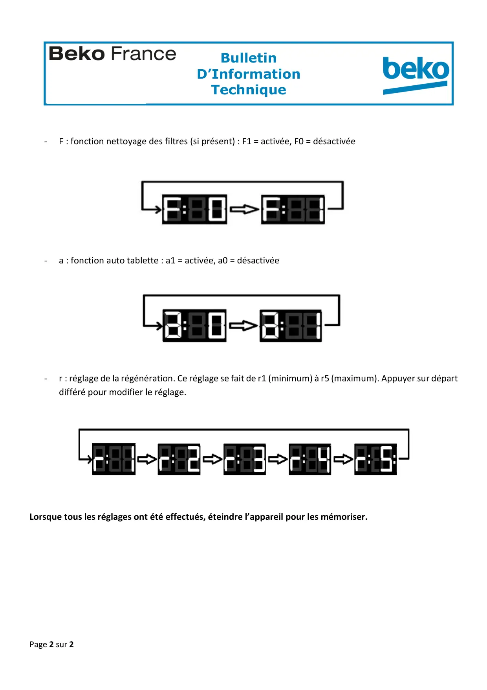

Réglages Régénérations lave vaisselle D1

Page 1 sur 2BulletinD’InformationTechniqueZA de la Voûte73650 PETIT COURONNE01.58.34.46.46LAVE-VAISSELLE BEKOELECTRONIQUE D1REGLAGES – REGENERATIONEntrée dans le menu réglages1/ Mettre l’appareil en marche2 / Maintenir enfoncée les touches « P+» et « Départ différé » (1 et 9) simultanément, et laissez se faire lecompte à rebours 3,2,1 jusqu’à l’affichage d’une icône correspondant à un réglage. Pour modifier le réglageaffiché, appuyer sur la touche « départ différé ».3/ Sélectionner en appuyant sur la touche « P » le réglage que vous voulez effectuer :-Voyant rinçage clignote (13) : 1 = activé, 0 = désactivé-L : éclairage intérieur (si présent). 1 = activé, 0 = désactivé
1 / 2
Page 2 sur 2BulletinD’InformationTechniqueZA de la Voûte73650 PETIT COURONNE01.58.34.46.46-F : fonction nettoyage des filtres (si présent) : F1 = activée, F0 = désactivée-a : fonction auto tablette : a1 = activée, a0 = désactivée-r : réglage de la régénération. Ce réglage se fait de r1 (minimum) à r5 (maximum). Appuyer sur départdifféré pour modifier le réglage.Lorsque tous les réglages ont été effectués, éteindre l’appareil pour les mémoriser.
2 / 2